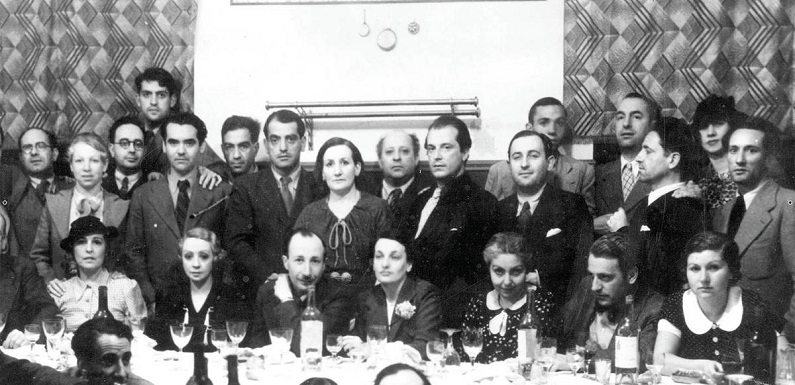

Autores de la generación del 27.
Con el término Generación del 27 se denomina a una constelación de escritores y poetas españoles (a las mujeres de esta generación también se les conoce como Las Sinsombrero) del siglo XX .
Se dió a conocer alrededor de 1927 con motivo del homenaje a Luis de Góngora organizado en ese año por José María Romero Martínez en el Ateneo de Sevilla.
